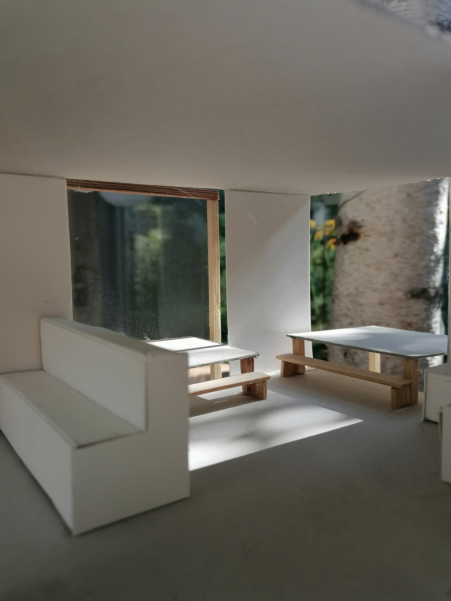
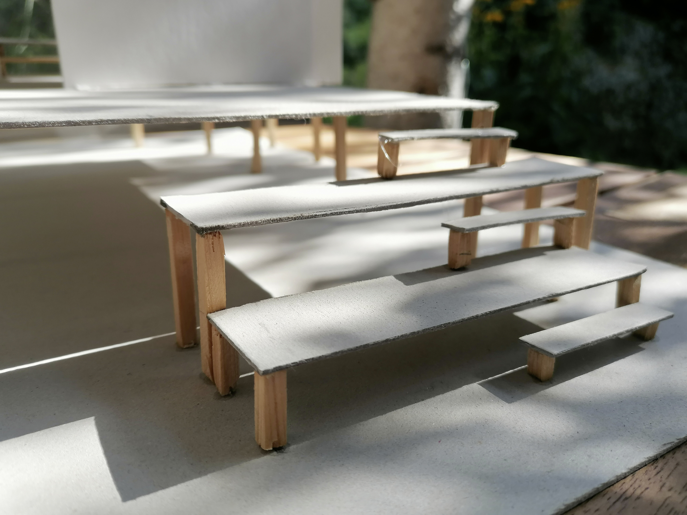
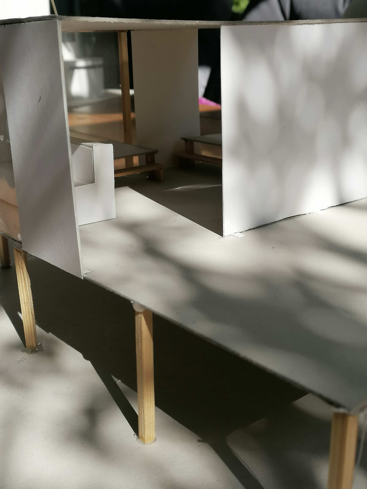
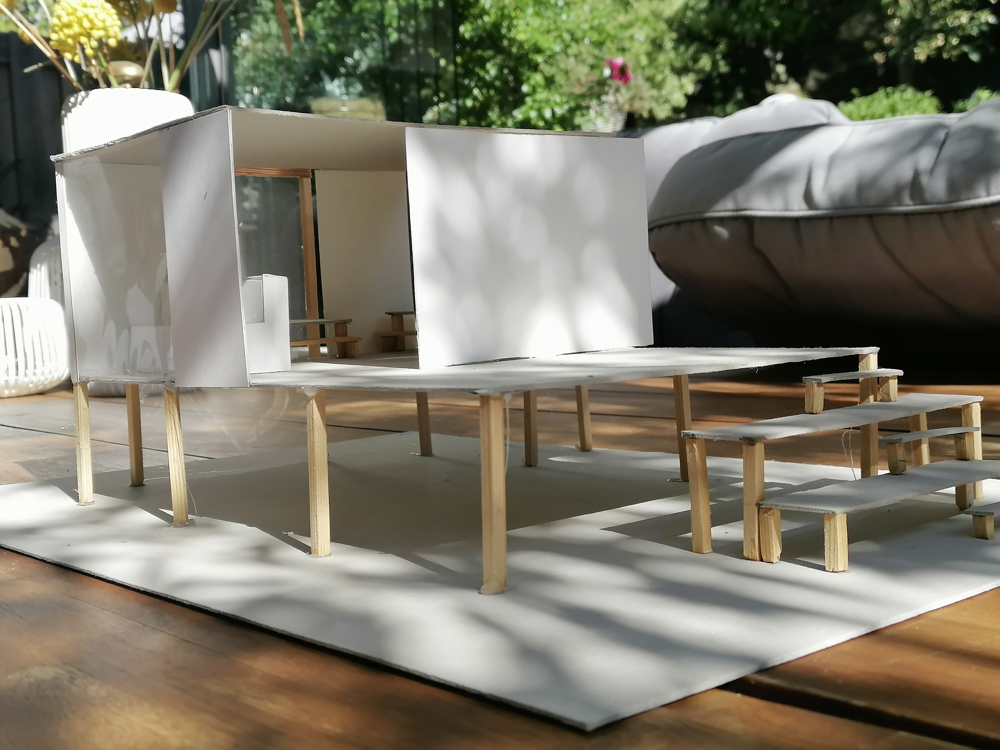

| Details: |
|
|---|---|
| Maße | 25cm x 57cm x 27cm |
| Material | Graupappe, einseitig weißbeschichtete Pappe, dünne Kunststoffplatte, Holzstab, Sekundenkleber, Heißklebepistole |
| Auftraggeberin | Kunstlehrerin |
| Architektin | Zoé Zimmermann |
| Baubeginn | Januar 2020 |
| Fertigstellung | Februar 2020 |